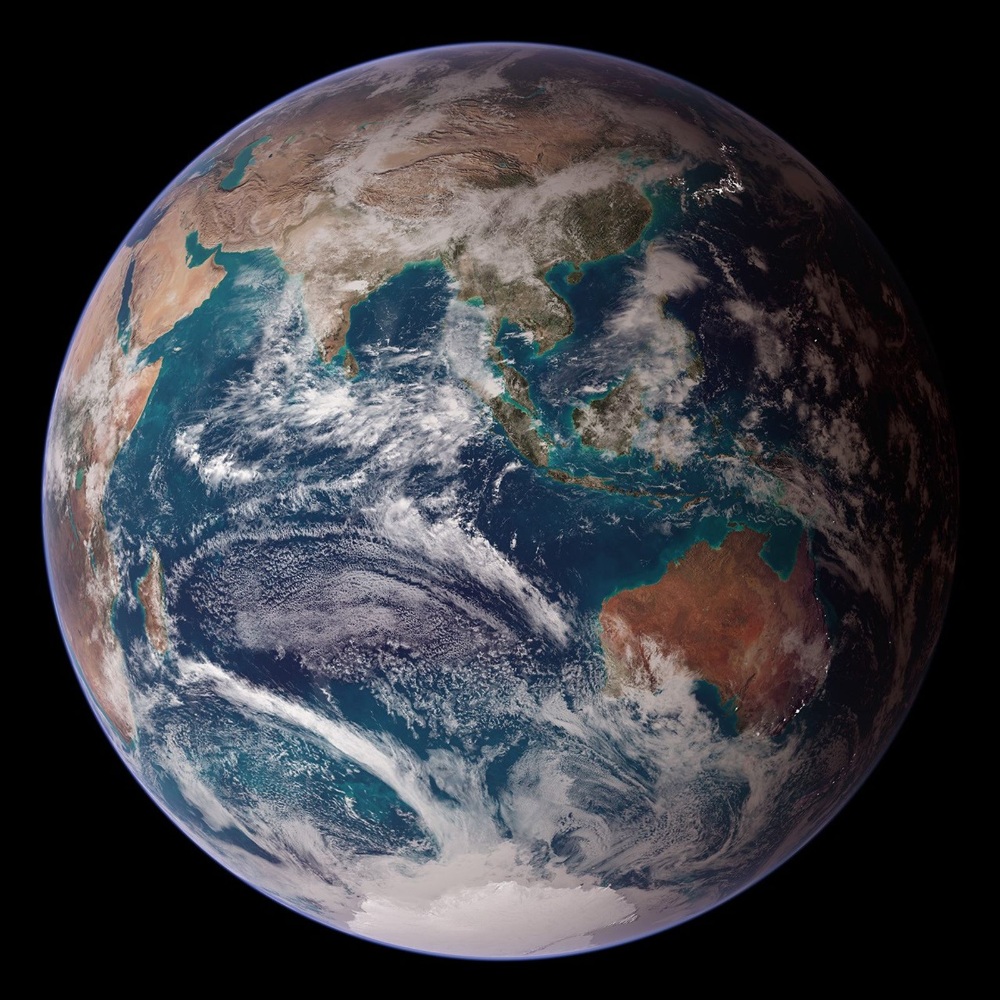

Digital growth systems · Poznań
Websites are only the beginning.
I build websites, search visibility and AI-powered marketing systems that help service businesses get discovered, earn trust and turn attention into enquiries.
Working inEnglishPolskiУкраїнська
01 — What I do
Six disciplines, built to work as one system.
01
Website design & development
Placeholder card, here so you can judge how the dark scene hands over to the cream section.
02
SEO & local SEO
Placeholder card.
03
Content strategy
Placeholder card.